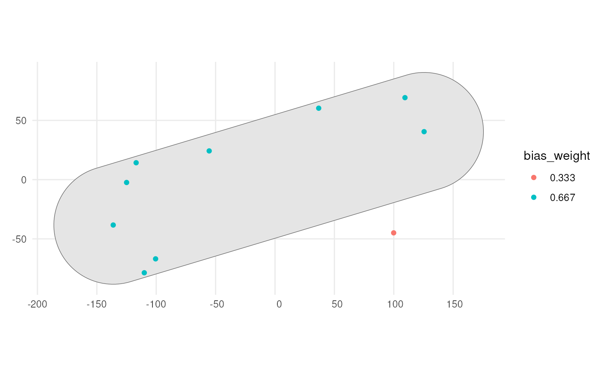

Apply sampling bias to occurrences via a polygon
Source:R/apply_polygon_sampling_bias.R
apply_polygon_sampling_bias.RdThis function adds a sampling bias weight column to an sf object containing
occurrences based on a given polygonal area. The bias is determined by the
specified bias strength, which adjusts the probability of sampling within
the polygonal area.
Arguments
- occurrences_sf
An sf object with POINT geometry representing the occurrences.
- bias_area
An sf object with POLYGON geometry specifying the area where sampling will be biased.
- bias_strength
A positive numeric value that represents the strength of the bias to be applied within the
bias_area. Values greater than 1 will increase the sampling probability within the polygon relative to outside (oversampling), while values between 0 and 1 will decrease it (undersampling). For instance, a value of 50 will make the probability 50 times higher within thebias_areacompared to outside, whereas a value of 0.5 will make it half as likely.
Value
An sf object with POINT geometry that includes a bias_weight
column containing the sampling probabilities based on the bias area and
strength.
See also
Other detection:
apply_manual_sampling_bias()
Examples
# Load packages
library(sf)
library(dplyr)
library(ggplot2)
# Simulate some occurrence data with coordinates and time points
num_points <- 10
occurrences <- data.frame(
lon = runif(num_points, min = -180, max = 180),
lat = runif(num_points, min = -90, max = 90),
time_point = 1
)
# Convert the occurrence data to an sf object
occurrences_sf <- st_as_sf(occurrences, coords = c("lon", "lat"))
# Create bias_area polygon overlapping at least two of the points
selected_observations <- st_union(occurrences_sf[2:3,])
bias_area <- st_convex_hull(selected_observations) %>%
st_buffer(dist = 50) %>%
st_as_sf()
occurrence_bias_sf <- apply_polygon_sampling_bias(
occurrences_sf,
bias_area,
bias_strength = 2)
occurrence_bias_sf
#> Simple feature collection with 10 features and 2 fields
#> Geometry type: POINT
#> Dimension: XY
#> Bounding box: xmin: -172.9904 ymin: -81.72951 xmax: 172.7625 ymax: 75.85536
#> CRS: NA
#> time_point geometry bias_weight
#> 1 1 POINT (-167.5664 -23.38865) 0.3333333
#> 2 1 POINT (99.42527 -2.255386) 0.6666667
#> 3 1 POINT (-164.214 -81.72951) 0.6666667
#> 4 1 POINT (-43.13971 72.36951) 0.3333333
#> 5 1 POINT (-172.9904 75.85536) 0.3333333
#> 6 1 POINT (9.115023 39.80854) 0.3333333
#> 7 1 POINT (-38.63359 32.45773) 0.3333333
#> 8 1 POINT (-45.8016 -14.07885) 0.6666667
#> 9 1 POINT (127.2717 47.30092) 0.3333333
#> 10 1 POINT (172.7625 -44.32055) 0.3333333
# Visualise where the bias is
occurrence_bias_sf %>%
mutate(bias_weight = as.factor(round(bias_weight, 3))) %>%
ggplot() +
geom_sf(data = bias_area) +
geom_sf(aes(colour = bias_weight)) +
theme_minimal()
